Contents
clear;
close all;
debug_lvl = 0
iter_req = 1;
count_failed = 1;
T = 200;
K = 4;
TolCon = 1e-12;
MaxIter = 10000;
MaxFunEvals = 1000000;
debug_lvl =
0
generate the input data
gen_test_data;
Delta = 0.01;
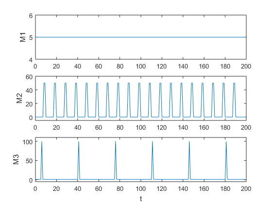 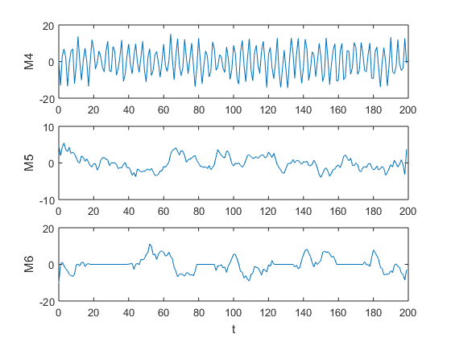
initial conditions
I_b0 = ones(T, 1) * 0;
I_sk_out0 = ones(T, K) * 1;
I_sk_in0 = ones(T, K) * 2;
V_sk0 = ones(T+1, K) * 3;
L_k0 = ones(T, K) * 4;
I_b0 = reshape(I_b0,1,[]).';
I_sk_out0 = reshape(I_sk_out0,1,[]).';
I_sk_in0 = reshape(I_sk_in0,1,[]).';
V_sk0 = reshape(V_sk0,1,[]).';
L_k0 = reshape(L_k0,1,[]).';
x0 = [ I_b0;
I_sk_out0;
I_sk_in0;
V_sk0;
L_k0];
construct the problem
prepare_P3;
parameters
epsilon = 0.7;
sigma_1 = 26.0;
sigma_2 = 0.8;
gamma = 0.001;
delta = 1.;
nonlinear constraint
nonlcon = [];
input for MIAD
sigma_1 = 2.0;
sigma_2 = 0.5;
alpha = 2;
beta_1 = 2.0;
beta_2 = 0.5;
if exist('x_start_orig_0.mat','file')
load('x_start_orig_0.mat', 'x');
x0 = x;
else
rng('shuffle')
x0 = rand(size(x));
end
parameters
epsilon = 0.7;
sigma_1 = 26.0;
sigma_2 = 0.8;
gamma = 0.001;
delta = 1.;
solver options
options = optimoptions(@fmincon,'Algorithm','interior-point', ...
'PlotFcn',{@optimplotconstrviolation,@optimplotfval,@optimplotfirstorderopt}, ...
'Display','iter', 'MaxIter', MaxIter, 'MaxFunEvals', MaxFunEvals, ...
'TolCon', TolCon);
MIAD
if alpha < 1
error('alpha must be bigger than 1')
end
if beta_1 < 0 && beta_1 >= sigma_1
error('beta_1 must be bigger than 0 and smaller sigma_1')
end
if beta_2 < 0 && beta_2 >= sigma_2
error('beta_2 must be bigger than 0 and smaller sigma_2')
end
n = 1;
m = 1;
run = 1;
n_iter = 0;
temp_1 = sigma_1;
temp_2 = sigma_2;
while n_iter < iter_req
if debug_lvl > 0
disp(['sigma_1: ', num2str(sigma_1)])
disp(['sigma_2: ', num2str(sigma_2)])
disp(['n_iter: ', num2str(n_iter)])
end
fun = @(x)objective_fun_P3( x, sigma_1, sigma_2, epsilon, gamma, delta, T, F, f);
x0 = x;
[x, fval, exitflag, output] = ...
fmincon(fun,x,A,b,Aeq,beq,lb,ub,nonlcon,options);
output
is_feasible = exitflag ~= -2;
if(is_feasible)
disp(['exitflag=', num2str(exitflag)])
disp(['fval: ', num2str(fval)])
else
disp('Solution is NOT OK (NOT feasible)')
output.message
end
if (is_feasible + count_failed) > 0
n_iter = n_iter + 1;
end
if (is_feasible)
if sigma_1 >= beta_1 && sigma_2 >= beta_2
if n == 1
temp_1 = sigma_1;
sigma_1 = sigma_1 - beta_1;
n = 2;
else
temp_2 = sigma_2;
sigma_2 = sigma_2 - beta_2;
n = 1;
end
end
else
if temp_1 - sigma_1 == beta_1
sigma_1 = sigma_1 + beta_1;
end
if temp_2 - sigma_2 == beta_2
sigma_2 = sigma_2 + beta_2;
end
if temp_1 - sigma_1 ~= beta_1 && temp_2 - sigma_2 ~= beta_2
if m == 1
sigma_1 = alpha * sigma_1;
m = 2;
else
sigma_2 = alpha * sigma_2;
m = 1;
end
end
end
end
First-order Norm of
Iter F-count f(x) Feasibility optimality step
0 3405 1.357205e+00 1.071e+02 3.698e-01
User objective function returned Inf; trying a new point...
1 6826 1.358635e+00 1.071e+02 8.400e-01 4.550e-03
User objective function returned Inf; trying a new point...
2 10233 1.360436e+00 1.071e+02 1.167e+00 4.117e-03
User objective function returned Inf; trying a new point...
3 13644 1.360284e+00 1.071e+02 5.329e-01 8.755e-03
User objective function returned Inf; trying a new point...
4 17057 1.361122e+00 1.071e+02 7.623e-01 3.514e-03
User objective function returned Inf; trying a new point...
5 20464 1.364877e+00 1.071e+02 2.591e+00 5.862e-03
User objective function returned Inf; trying a new point...
6 23875 1.363643e+00 1.071e+02 5.516e-01 6.623e-03
User objective function returned Inf; trying a new point...
7 27288 1.363973e+00 1.071e+02 5.705e-01 2.736e-03
User objective function returned Inf; trying a new point...
8 30696 1.366141e+00 1.071e+02 6.706e+00 2.309e-03
User objective function returned Inf; trying a new point...
9 34106 1.365876e+00 1.071e+02 7.392e-01 4.882e-03
User objective function returned Inf; trying a new point...
10 37517 1.365085e+00 1.071e+02 5.458e-01 8.654e-03
User objective function returned Inf; trying a new point...
11 40929 1.365298e+00 1.071e+02 8.257e-01 7.510e-03
User objective function returned Inf; trying a new point...
12 44342 1.365187e+00 1.071e+02 7.048e-01 3.224e-03
User objective function returned Inf; trying a new point...
13 47750 1.366634e+00 1.071e+02 1.027e+00 2.708e-03
User objective function returned Inf; trying a new point...
14 51161 1.366350e+00 1.071e+02 8.578e-01 2.832e-03
User objective function returned Inf; trying a new point...
15 54567 1.368384e+00 1.071e+02 1.215e+00 9.291e-03
User objective function returned Inf; trying a new point...
16 57980 1.368143e+00 1.071e+02 9.022e-01 2.469e-03
User objective function returned Inf; trying a new point...
17 61386 1.369967e+00 1.071e+02 1.146e+00 7.408e-03
User objective function returned Inf; trying a new point...
18 64799 1.369549e+00 1.071e+02 9.022e-01 2.177e-03
User objective function returned Inf; trying a new point...
19 68205 1.370563e+00 1.071e+02 9.022e-01 6.013e-03
User objective function returned Inf; trying a new point...
20 71617 1.370522e+00 1.071e+02 2.077e+00 3.794e-03
User objective function returned Inf; trying a new point...
21 75023 1.371985e+00 1.071e+02 2.077e+00 9.651e-03
User objective function returned Inf; trying a new point...
22 78435 1.371755e+00 1.071e+02 5.261e-01 6.773e-03
User objective function returned Inf; trying a new point...
23 81842 1.373037e+00 1.071e+02 6.644e-01 7.853e-03
User objective function returned Inf; trying a new point...
24 85254 1.373481e+00 1.071e+02 6.831e-01 5.923e-03
User objective function returned Inf; trying a new point...
25 88660 1.375563e+00 1.071e+02 8.731e-01 1.267e-02
User objective function returned Inf; trying a new point...
26 92073 1.375588e+00 1.070e+02 9.917e-01 5.146e-03
User objective function returned Inf; trying a new point...
27 95479 1.377318e+00 1.070e+02 1.032e+00 1.083e-02
User objective function returned Inf; trying a new point...
28 98891 1.378094e+00 1.070e+02 4.168e+00 8.995e-03
User objective function returned Inf; trying a new point...
29 102298 1.380021e+00 1.070e+02 4.540e+00 9.102e-03
User objective function returned Inf; trying a new point...
30 105711 1.379764e+00 1.070e+02 1.049e+00 3.995e-03
User objective function returned Inf; trying a new point...
First-order Norm of
Iter F-count f(x) Feasibility optimality step
31 109118 1.380847e+00 1.070e+02 6.505e+00 3.753e-03
User objective function returned Inf; trying a new point...
32 112529 1.381105e+00 1.070e+02 3.177e+01 6.908e-03
User objective function returned Inf; trying a new point...
33 115935 1.383979e+00 1.070e+02 4.544e+01 1.345e-02
User objective function returned Inf; trying a new point...
34 119347 1.382553e+00 1.070e+02 3.171e+00 6.423e-03
User objective function returned Inf; trying a new point...
35 122754 1.383876e+00 1.070e+02 3.874e+00 5.846e-03
User objective function returned Inf; trying a new point...
36 126165 1.382179e+00 1.070e+02 1.012e+00 7.808e-03
User objective function returned Inf; trying a new point...
37 129571 1.384882e+00 1.070e+02 1.745e+00 1.507e-02
User objective function returned Inf; trying a new point...
38 132983 1.383292e+00 1.070e+02 1.237e+00 7.657e-03
User objective function returned Inf; trying a new point...
39 136389 1.385805e+00 1.070e+02 2.143e+00 1.427e-02
User objective function returned Inf; trying a new point...
40 139801 1.384533e+00 1.070e+02 7.612e-01 6.775e-03
User objective function returned Inf; trying a new point...
41 143207 1.386711e+00 1.070e+02 7.612e-01 1.322e-02
User objective function returned Inf; trying a new point...
42 146619 1.386078e+00 1.070e+02 7.133e-01 6.116e-03
User objective function returned Inf; trying a new point...
43 150025 1.388171e+00 1.070e+02 1.141e+00 1.206e-02
User objective function returned Inf; trying a new point...
44 153437 1.387902e+00 1.070e+02 7.195e-01 6.347e-03
User objective function returned Inf; trying a new point...
45 156843 1.389835e+00 1.070e+02 7.206e-01 1.217e-02
User objective function returned Inf; trying a new point...
46 160255 1.389483e+00 1.070e+02 7.195e-01 5.470e-03
User objective function returned Inf; trying a new point...
47 163661 1.391178e+00 1.070e+02 7.195e-01 1.166e-02
User objective function returned Inf; trying a new point...
48 167073 1.390969e+00 1.070e+02 7.195e-01 4.956e-03
User objective function returned Inf; trying a new point...
49 170479 1.392453e+00 1.070e+02 7.195e-01 1.067e-02
User objective function returned Inf; trying a new point...
50 173891 1.392420e+00 1.070e+02 7.195e-01 4.488e-03
User objective function returned Inf; trying a new point...
51 177297 1.393726e+00 1.070e+02 7.195e-01 9.424e-03
User objective function returned Inf; trying a new point...
52 180709 1.393768e+00 1.070e+02 7.195e-01 4.063e-03
User objective function returned Inf; trying a new point...
53 184115 1.394964e+00 1.070e+02 7.195e-01 8.649e-03
User objective function returned Inf; trying a new point...
54 187526 1.394167e+00 1.069e+02 7.432e-01 9.485e-03
User objective function returned Inf; trying a new point...
55 190933 1.395754e+00 1.069e+02 1.689e+00 9.765e-03
User objective function returned Inf; trying a new point...
56 194345 1.395890e+00 1.069e+02 7.343e-01 4.308e-03
User objective function returned Inf; trying a new point...
57 197751 1.397205e+00 1.069e+02 7.343e-01 9.208e-03
User objective function returned Inf; trying a new point...
58 201163 1.397698e+00 1.069e+02 7.343e-01 3.813e-03
User objective function returned Inf; trying a new point...
59 204569 1.398834e+00 1.069e+02 7.343e-01 8.514e-03
User objective function returned Inf; trying a new point...
60 207981 1.399225e+00 1.069e+02 7.271e-01 3.480e-03
User objective function returned Inf; trying a new point...
First-order Norm of
Iter F-count f(x) Feasibility optimality step
61 211387 1.400312e+00 1.069e+02 7.271e-01 7.691e-03
User objective function returned Inf; trying a new point...
62 214799 1.400678e+00 1.069e+02 7.248e-01 3.952e-03
User objective function returned Inf; trying a new point...
63 218205 1.401862e+00 1.069e+02 7.248e-01 8.668e-03
User objective function returned Inf; trying a new point...
64 221616 1.401283e+00 1.069e+02 6.397e-01 9.178e-03
User objective function returned Inf; trying a new point...
65 225022 1.403911e+00 1.069e+02 6.397e-01 1.979e-02
User objective function returned Inf; trying a new point...
66 228434 1.404417e+00 1.069e+02 1.072e+00 8.151e-03
User objective function returned Inf; trying a new point...
67 231840 1.406897e+00 1.069e+02 1.043e+00 1.820e-02
User objective function returned Inf; trying a new point...
68 235252 1.407564e+00 1.069e+02 7.469e-01 7.809e-03
User objective function returned Inf; trying a new point...
69 238658 1.409832e+00 1.069e+02 7.469e-01 1.686e-02
User objective function returned Inf; trying a new point...
70 242070 1.410088e+00 1.069e+02 7.398e-01 6.690e-03
User objective function returned Inf; trying a new point...
71 245476 1.412163e+00 1.069e+02 7.398e-01 1.528e-02
User objective function returned Inf; trying a new point...
72 248888 1.412418e+00 1.069e+02 7.382e-01 6.070e-03
User objective function returned Inf; trying a new point...
73 252294 1.414251e+00 1.069e+02 7.382e-01 1.376e-02
User objective function returned Inf; trying a new point...
74 255706 1.414587e+00 1.069e+02 7.382e-01 5.496e-03
User objective function returned Inf; trying a new point...
75 259112 1.416267e+00 1.069e+02 7.382e-01 1.269e-02
User objective function returned Inf; trying a new point...
76 262524 1.416632e+00 1.069e+02 7.382e-01 4.980e-03
User objective function returned Inf; trying a new point...
77 265930 1.418160e+00 1.069e+02 7.382e-01 1.157e-02
User objective function returned Inf; trying a new point...
78 269342 1.418529e+00 1.069e+02 7.382e-01 4.520e-03
User objective function returned Inf; trying a new point...
79 272748 1.419942e+00 1.069e+02 7.382e-01 1.052e-02
User objective function returned Inf; trying a new point...
80 276159 1.419352e+00 1.069e+02 7.382e-01 1.052e-02
User objective function returned Inf; trying a new point...
81 279565 1.422682e+00 1.068e+02 7.382e-01 2.450e-02
User objective function returned Inf; trying a new point...
82 282978 1.423304e+00 1.068e+02 7.539e-01 3.677e-03
User objective function returned Inf; trying a new point...
83 286384 1.424514e+00 1.068e+02 7.539e-01 9.008e-03
User objective function returned Inf; trying a new point...
84 289795 1.425055e+00 1.068e+02 8.403e-01 8.736e-03
User objective function returned Inf; trying a new point...
85 293201 1.427810e+00 1.068e+02 8.403e-01 2.030e-02
User objective function returned Inf; trying a new point...
86 296613 1.427883e+00 1.068e+02 7.720e-01 7.737e-03
User objective function returned Inf; trying a new point...
87 300019 1.430403e+00 1.068e+02 7.720e-01 1.845e-02
User objective function returned Inf; trying a new point...
88 303431 1.431372e+00 1.068e+02 1.012e+01 6.950e-03
User objective function returned Inf; trying a new point...
89 306837 1.433728e+00 1.068e+02 9.905e+00 1.705e-02
User objective function returned Inf; trying a new point...
90 310249 1.433940e+00 1.068e+02 9.121e+00 6.517e-03
User objective function returned Inf; trying a new point...
First-order Norm of
Iter F-count f(x) Feasibility optimality step
91 313655 1.436079e+00 1.068e+02 7.655e+00 1.619e-02
User objective function returned Inf; trying a new point...
92 317068 1.436266e+00 1.068e+02 3.080e+00 2.501e-03
User objective function returned Inf; trying a new point...
93 320474 1.437107e+00 1.068e+02 3.089e+00 6.215e-03
User objective function returned Inf; trying a new point...
94 323885 1.437309e+00 1.068e+02 8.644e-01 6.012e-03
User objective function returned Inf; trying a new point...
95 327291 1.439287e+00 1.068e+02 8.644e-01 1.468e-02
User objective function returned Inf; trying a new point...
96 330703 1.439475e+00 1.068e+02 9.677e-01 5.499e-03
User objective function returned Inf; trying a new point...
97 334109 1.441272e+00 1.068e+02 9.677e-01 1.345e-02
User objective function returned Inf; trying a new point...
98 337521 1.441299e+00 1.068e+02 1.029e+00 4.899e-03
User objective function returned Inf; trying a new point...
99 340927 1.442969e+00 1.068e+02 1.029e+00 1.255e-02
User objective function returned Inf; trying a new point...
100 344339 1.443005e+00 1.068e+02 1.184e+00 4.585e-03
User objective function returned Inf; trying a new point...
101 347745 1.444562e+00 1.068e+02 1.184e+00 1.175e-02
User objective function returned Inf; trying a new point...
102 351157 1.444833e+00 1.068e+02 1.441e+00 4.144e-03
User objective function returned Inf; trying a new point...
103 354563 1.446269e+00 1.068e+02 1.439e+00 1.089e-02
User objective function returned Inf; trying a new point...
104 357975 1.446621e+00 1.068e+02 1.721e+00 3.821e-03
User objective function returned Inf; trying a new point...
105 361381 1.447976e+00 1.068e+02 1.722e+00 1.012e-02
User objective function returned Inf; trying a new point...
106 364793 1.448291e+00 1.068e+02 1.871e+00 3.541e-03
User objective function returned Inf; trying a new point...
107 368199 1.449553e+00 1.067e+02 1.872e+00 9.448e-03
User objective function returned Inf; trying a new point...
108 371610 1.449175e+00 1.067e+02 2.155e+00 8.345e-03
User objective function returned Inf; trying a new point...
109 375016 1.452110e+00 1.067e+02 2.160e+00 2.189e-02
User objective function returned Inf; trying a new point...
110 378428 1.452206e+00 1.067e+02 2.375e+00 7.568e-03
User objective function returned Inf; trying a new point...
111 381834 1.454908e+00 1.067e+02 2.394e+00 2.012e-02
User objective function returned Inf; trying a new point...
112 385246 1.455057e+00 1.067e+02 1.593e+00 7.027e-03
User objective function returned Inf; trying a new point...
113 388652 1.457562e+00 1.067e+02 1.597e+00 1.875e-02
User objective function returned Inf; trying a new point...
114 392064 1.457756e+00 1.067e+02 9.757e-01 8.086e-03
User objective function returned Inf; trying a new point...
115 395470 1.460663e+00 1.067e+02 9.778e-01 2.171e-02
User objective function returned Inf; trying a new point...
116 398882 1.460702e+00 1.067e+02 2.140e+00 9.304e-03
User objective function returned Inf; trying a new point...
117 402288 1.464100e+00 1.067e+02 2.148e+00 2.526e-02
User objective function returned Inf; trying a new point...
118 405699 1.461824e+00 1.067e+02 8.288e-01 2.170e-02
User objective function returned Inf; trying a new point...
119 409105 1.470057e+00 1.067e+02 8.308e-01 6.009e-02
User objective function returned Inf; trying a new point...
120 412517 1.470235e+00 1.066e+02 8.441e-01 1.982e-02
User objective function returned Inf; trying a new point...
First-order Norm of
Iter F-count f(x) Feasibility optimality step
121 415923 1.477883e+00 1.066e+02 9.044e-01 5.559e-02
User objective function returned Inf; trying a new point...
122 419335 1.479270e+00 1.066e+02 8.949e-01 1.887e-02
User objective function returned Inf; trying a new point...
123 422741 1.486344e+00 1.066e+02 8.985e-01 5.142e-02
User objective function returned Inf; trying a new point...
124 426153 1.487058e+00 1.066e+02 1.019e+00 1.675e-02
User objective function returned Inf; trying a new point...
125 429559 1.493735e+00 1.066e+02 1.025e+00 4.862e-02
User objective function returned Inf; trying a new point...
126 432971 1.494160e+00 1.066e+02 1.093e+00 1.547e-02
User objective function returned Inf; trying a new point...
127 436377 1.500346e+00 1.065e+02 1.101e+00 4.533e-02
User objective function returned Inf; trying a new point...
128 439789 1.501073e+00 1.065e+02 1.170e+00 1.428e-02
User objective function returned Inf; trying a new point...
129 443195 1.506822e+00 1.065e+02 1.175e+00 4.257e-02
User objective function returned Inf; trying a new point...
130 446607 1.507181e+00 1.065e+02 9.329e-01 1.329e-02
User objective function returned Inf; trying a new point...
131 450013 1.512553e+00 1.065e+02 9.273e-01 3.996e-02
User objective function returned Inf; trying a new point...
132 453424 1.511448e+00 1.065e+02 4.574e-01 3.192e-02
User objective function returned Inf; trying a new point...
133 456830 1.523778e+00 1.065e+02 4.574e-01 9.290e-02
User objective function returned Inf; trying a new point...
134 460243 1.524510e+00 1.064e+02 3.983e-01 1.124e-02
User objective function returned Inf; trying a new point...
135 463649 1.529167e+00 1.064e+02 3.983e-01 3.528e-02
User objective function returned Inf; trying a new point...
136 467061 1.530020e+00 1.064e+02 4.580e-01 1.292e-02
User objective function returned Inf; trying a new point...
137 470467 1.535436e+00 1.064e+02 4.580e-01 4.111e-02
User objective function returned Inf; trying a new point...
138 473880 1.536557e+00 1.064e+02 7.064e-01 5.890e-03
User objective function returned Inf; trying a new point...
139 477286 1.539077e+00 1.064e+02 7.044e-01 1.923e-02
User objective function returned Inf; trying a new point...
140 480698 1.540190e+00 1.064e+02 6.348e-01 8.876e-03
User objective function returned Inf; trying a new point...
141 484104 1.543832e+00 1.064e+02 6.360e-01 2.793e-02
User objective function returned Inf; trying a new point...
142 487515 1.543168e+00 1.064e+02 8.403e-01 2.039e-02
User objective function returned Inf; trying a new point...
143 490921 1.551468e+00 1.064e+02 8.584e-01 6.380e-02
User objective function returned Inf; trying a new point...
144 494333 1.551454e+00 1.063e+02 4.419e-01 1.890e-02
User objective function returned Inf; trying a new point...
145 497739 1.559141e+00 1.063e+02 4.419e-01 5.983e-02
User objective function returned Inf; trying a new point...
146 501151 1.559705e+00 1.063e+02 5.295e-01 1.716e-02
User objective function returned Inf; trying a new point...
147 504557 1.566940e+00 1.063e+02 5.193e-01 5.637e-02
User objective function returned Inf; trying a new point...
148 507969 1.567706e+00 1.063e+02 5.589e-01 1.581e-02
User objective function returned Inf; trying a new point...
149 511375 1.574380e+00 1.063e+02 5.659e-01 5.226e-02
User objective function returned Inf; trying a new point...
150 514787 1.575649e+00 1.063e+02 5.976e-01 1.460e-02
User objective function returned Inf; trying a new point...
First-order Norm of
Iter F-count f(x) Feasibility optimality step
151 518193 1.581956e+00 1.063e+02 5.918e-01 4.919e-02
User objective function returned Inf; trying a new point...
152 521604 1.580602e+00 1.062e+02 5.893e-01 3.495e-02
User objective function returned Inf; trying a new point...
153 525010 1.595246e+00 1.062e+02 5.893e-01 1.143e-01
User objective function returned Inf; trying a new point...
154 528423 1.596243e+00 1.062e+02 5.342e-01 1.238e-02
User objective function returned Inf; trying a new point...
155 531829 1.601757e+00 1.062e+02 5.402e-01 4.328e-02
User objective function returned Inf; trying a new point...
156 535241 1.603550e+00 1.062e+02 5.722e-01 1.144e-02
User objective function returned Inf; trying a new point...
157 538647 1.608634e+00 1.062e+02 5.729e-01 4.038e-02
User objective function returned Inf; trying a new point...
158 542059 1.610548e+00 1.061e+02 1.062e+00 1.324e-02
User objective function returned Inf; trying a new point...
159 545465 1.616467e+00 1.061e+02 1.008e+00 4.702e-02
User objective function returned Inf; trying a new point...
160 548877 1.618746e+00 1.061e+02 4.820e+02 1.707e-02
User objective function returned Inf; trying a new point...
161 552283 1.625752e+00 1.061e+02 3.898e+02 5.925e-02
User objective function returned Inf; trying a new point...
162 555698 1.626727e+00 1.061e+02 1.542e+02 8.819e-04
User objective function returned Inf; trying a new point...
163 559104 1.627066e+00 1.061e+02 1.545e+02 2.779e-03
User objective function returned Inf; trying a new point...
164 562518 1.627323e+00 1.061e+02 1.224e+02 1.053e-04
User objective function returned Inf; trying a new point...
165 565924 1.627364e+00 1.061e+02 1.224e+02 3.232e-04
User objective function returned Inf; trying a new point...
166 569336 1.627133e+00 1.061e+02 8.419e+01 8.148e-05
User objective function returned Inf; trying a new point...
167 572742 1.627164e+00 1.061e+02 8.418e+01 2.507e-04
User objective function returned Inf; trying a new point...
168 576153 1.627634e+00 1.061e+02 6.804e+01 1.485e-04
User objective function returned Inf; trying a new point...
169 579559 1.627691e+00 1.061e+02 6.804e+01 4.601e-04
User objective function returned Inf; trying a new point...
170 582969 1.628202e+00 1.061e+02 4.148e+01 6.856e-04
User objective function returned Inf; trying a new point...
171 586375 1.628465e+00 1.061e+02 4.150e+01 2.131e-03
User objective function returned Inf; trying a new point...
172 589789 1.628342e+00 1.061e+02 3.363e+01 8.729e-05
User objective function returned Inf; trying a new point...
173 593195 1.628376e+00 1.061e+02 3.363e+01 2.692e-04
User objective function returned Inf; trying a new point...
174 596607 1.628280e+00 1.061e+02 3.353e+01 6.819e-05
User objective function returned Inf; trying a new point...
175 600013 1.628306e+00 1.061e+02 3.353e+01 2.115e-04
User objective function returned Inf; trying a new point...
176 603424 1.628721e+00 1.061e+02 3.353e+01 1.243e-04
User objective function returned Inf; trying a new point...
177 606830 1.628768e+00 1.061e+02 3.353e+01 3.862e-04
User objective function returned Inf; trying a new point...
178 610242 1.628384e+00 1.061e+02 2.843e+01 1.076e-04
User objective function returned Inf; trying a new point...
179 613648 1.628424e+00 1.061e+02 2.844e+01 3.313e-04
User objective function returned Inf; trying a new point...
180 617059 1.628989e+00 1.061e+02 3.061e+01 1.932e-04
User objective function returned Inf; trying a new point...
First-order Norm of
Iter F-count f(x) Feasibility optimality step
181 620465 1.629064e+00 1.061e+02 3.061e+01 6.078e-04
User objective function returned Inf; trying a new point...
182 623878 1.628719e+00 1.061e+02 2.474e+01 7.289e-05
User objective function returned Inf; trying a new point...
183 627284 1.628748e+00 1.061e+02 2.474e+01 2.238e-04
User objective function returned Inf; trying a new point...
184 630695 1.629107e+00 1.061e+02 2.474e+01 1.299e-04
User objective function returned Inf; trying a new point...
185 634101 1.629158e+00 1.061e+02 2.474e+01 4.077e-04
User objective function returned Inf; trying a new point...
186 637513 1.629632e+00 1.061e+02 2.923e+01 9.559e-05
User objective function returned Inf; trying a new point...
187 640919 1.629670e+00 1.061e+02 2.920e+01 2.989e-04
User objective function returned Inf; trying a new point...
188 644331 1.629589e+00 1.061e+02 2.427e+01 7.560e-05
User objective function returned Inf; trying a new point...
189 647737 1.629618e+00 1.061e+02 2.427e+01 2.355e-04
User objective function returned Inf; trying a new point...
190 651148 1.629928e+00 1.061e+02 5.610e+01 1.428e-04
User objective function returned Inf; trying a new point...
191 654554 1.629984e+00 1.061e+02 5.632e+01 4.456e-04
User objective function returned Inf; trying a new point...
192 657966 1.630185e+00 1.061e+02 3.260e+01 1.085e-04
User objective function returned Inf; trying a new point...
193 661372 1.630227e+00 1.061e+02 3.272e+01 3.379e-04
User objective function returned Inf; trying a new point...
194 664783 1.630215e+00 1.061e+02 3.529e+01 2.075e-04
User objective function returned Inf; trying a new point...
195 668189 1.630297e+00 1.061e+02 3.528e+01 6.527e-04
User objective function returned Inf; trying a new point...
196 671601 1.630711e+00 1.061e+02 2.559e+01 1.574e-04
User objective function returned Inf; trying a new point...
197 675007 1.630774e+00 1.061e+02 2.559e+01 4.950e-04
User objective function returned Inf; trying a new point...
198 678419 1.630590e+00 1.061e+02 2.946e+01 1.279e-04
User objective function returned Inf; trying a new point...
199 681825 1.630640e+00 1.061e+02 2.946e+01 3.979e-04
User objective function returned Inf; trying a new point...
200 685236 1.631775e+00 1.061e+02 1.304e+02 2.376e-04
User objective function returned Inf; trying a new point...
201 688642 1.631880e+00 1.061e+02 1.392e+02 7.474e-04
User objective function returned Inf; trying a new point...
202 692055 1.631588e+00 1.061e+02 9.599e+01 8.426e-05
User objective function returned Inf; trying a new point...
203 695461 1.631599e+00 1.061e+02 9.689e+01 7.444e-05
User objective function returned Inf; trying a new point...
204 698870 1.631667e+00 1.061e+02 4.053e+01 2.747e-04
User objective function returned Inf; trying a new point...
205 702276 1.631781e+00 1.061e+02 4.139e+01 8.551e-04
User objective function returned Inf; trying a new point...
206 705686 1.633414e+00 1.061e+02 2.828e+01 1.297e-03
User objective function returned Inf; trying a new point...
207 709092 1.633937e+00 1.061e+02 2.781e+01 4.107e-03
User objective function returned Inf; trying a new point...
208 712506 1.634192e+00 1.061e+02 2.174e+01 1.750e-04
User objective function returned Inf; trying a new point...
209 715912 1.634261e+00 1.061e+02 2.176e+01 5.523e-04
User objective function returned Inf; trying a new point...
210 719323 1.634667e+00 1.061e+02 1.245e+01 3.446e-04
User objective function returned Inf; trying a new point...
First-order Norm of
Iter F-count f(x) Feasibility optimality step
211 722729 1.634803e+00 1.061e+02 1.245e+01 1.083e-03
User objective function returned Inf; trying a new point...
212 726140 1.635490e+00 1.061e+02 1.740e+01 6.870e-04
User objective function returned Inf; trying a new point...
213 729546 1.635748e+00 1.061e+02 1.740e+01 2.147e-03
User objective function returned Inf; trying a new point...
214 732958 1.638003e+00 1.061e+02 1.147e+04 5.298e-04
User objective function returned Inf; trying a new point...
215 736370 1.636359e+00 1.061e+02 1.035e+01 2.335e-04
User objective function returned Inf; trying a new point...
216 739776 1.636375e+00 1.061e+02 1.035e+01 1.176e-04
User objective function returned Inf; trying a new point...
217 743187 1.636405e+00 1.061e+02 9.011e+00 7.301e-05
User objective function returned Inf; trying a new point...
218 746593 1.636430e+00 1.061e+02 8.997e+00 2.290e-04
User objective function returned Inf; trying a new point...
219 750004 1.637337e+00 1.061e+02 2.994e+01 1.394e-04
User objective function returned Inf; trying a new point...
220 753410 1.637387e+00 1.061e+02 2.994e+01 4.324e-04
User objective function returned Inf; trying a new point...
221 756823 1.636958e+00 1.061e+02 9.827e+00 4.751e-05
User objective function returned Inf; trying a new point...
222 760229 1.636976e+00 1.061e+02 9.828e+00 1.499e-04
User objective function returned Inf; trying a new point...
223 763639 1.639217e+00 1.061e+02 1.028e+02 2.242e-04
User objective function returned Inf; trying a new point...
224 767045 1.639253e+00 1.061e+02 1.028e+02 6.941e-04
User objective function returned Inf; trying a new point...
225 770458 1.638345e+00 1.061e+02 2.477e+01 8.161e-05
User objective function returned Inf; trying a new point...
226 773864 1.638352e+00 1.061e+02 2.470e+01 7.308e-05
User objective function returned Inf; trying a new point...
227 777274 1.638122e+00 1.061e+02 1.610e+01 1.154e-04
User objective function returned Inf; trying a new point...
228 780680 1.638164e+00 1.061e+02 1.608e+01 3.584e-04
User objective function returned Inf; trying a new point...
229 784092 1.638336e+00 1.061e+02 3.111e+01 9.440e-05
User objective function returned Inf; trying a new point...
230 787498 1.638372e+00 1.061e+02 3.106e+01 2.926e-04
User objective function returned Inf; trying a new point...
231 790908 1.639073e+00 1.061e+02 6.638e+01 4.588e-04
User objective function returned Inf; trying a new point...
232 794314 1.639168e+00 1.061e+02 6.638e+01 1.410e-03
User objective function returned Inf; trying a new point...
233 797727 1.639049e+00 1.061e+02 1.727e+01 1.500e-04
User objective function returned Inf; trying a new point...
234 801133 1.639099e+00 1.061e+02 1.781e+01 4.667e-04
User objective function returned Inf; trying a new point...
235 804545 1.639033e+00 1.061e+02 1.152e+01 1.194e-04
User objective function returned Inf; trying a new point...
236 807951 1.639078e+00 1.061e+02 1.155e+01 3.707e-04
User objective function returned Inf; trying a new point...
237 811364 1.638778e+00 1.061e+02 9.181e+00 4.191e-05
User objective function returned Inf; trying a new point...
238 814770 1.638795e+00 1.061e+02 9.183e+00 1.324e-04
User objective function returned Inf; trying a new point...
239 818181 1.639412e+00 1.061e+02 1.534e+01 7.988e-05
User objective function returned Inf; trying a new point...
240 821587 1.639443e+00 1.061e+02 1.538e+01 2.463e-04
User objective function returned Inf; trying a new point...
First-order Norm of
Iter F-count f(x) Feasibility optimality step
241 824999 1.640308e+00 1.061e+02 1.940e+02 6.098e-05
User objective function returned Inf; trying a new point...
242 828405 1.640317e+00 1.061e+02 1.975e+02 5.443e-05
User objective function returned Inf; trying a new point...
243 831814 1.642142e+00 1.061e+02 3.369e+02 2.009e-04
User objective function returned Inf; trying a new point...
244 835220 1.642005e+00 1.061e+02 3.236e+02 6.285e-04
User objective function returned Inf; trying a new point...
245 838633 1.640535e+00 1.061e+02 4.467e+01 8.303e-05
User objective function returned Inf; trying a new point...
246 842039 1.640537e+00 1.061e+02 4.467e+01 7.521e-05
User objective function returned Inf; trying a new point...
247 845449 1.641034e+00 1.061e+02 2.679e+01 1.155e-04
User objective function returned Inf; trying a new point...
248 848855 1.641073e+00 1.061e+02 2.679e+01 3.600e-04
User objective function returned Inf; trying a new point...
249 852266 1.642039e+00 1.061e+02 9.130e+01 2.316e-04
User objective function returned Inf; trying a new point...
250 855672 1.641980e+00 1.061e+02 9.130e+01 7.194e-04
User objective function returned Inf; trying a new point...
251 859084 1.642052e+00 1.061e+02 8.162e+01 1.890e-04
User objective function returned Inf; trying a new point...
252 862490 1.641998e+00 1.061e+02 8.162e+01 5.926e-04
User objective function returned Inf; trying a new point...
253 865902 1.642299e+00 1.061e+02 8.293e+01 1.612e-04
User objective function returned Inf; trying a new point...
254 869308 1.642272e+00 1.061e+02 8.114e+01 5.049e-04
User objective function returned Inf; trying a new point...
255 872720 1.643328e+00 1.061e+02 5.106e+01 1.252e-04
User objective function returned Inf; trying a new point...
256 876126 1.643330e+00 1.061e+02 5.106e+01 3.873e-04
User objective function returned Inf; trying a new point...
257 879538 1.644604e+00 1.061e+02 5.179e+02 9.864e-05
User objective function returned Inf; trying a new point...
258 882944 1.644641e+00 1.061e+02 5.327e+02 3.179e-04
User objective function returned Inf; trying a new point...
259 886355 1.644290e+00 1.061e+02 1.212e+02 1.961e-04
User objective function returned Inf; trying a new point...
260 889761 1.644372e+00 1.061e+02 1.419e+02 6.215e-04
User objective function returned Inf; trying a new point...
261 893173 1.644687e+00 1.061e+02 1.198e+02 1.601e-04
User objective function returned Inf; trying a new point...
262 896579 1.644711e+00 1.061e+02 1.198e+02 4.992e-04
User objective function returned Inf; trying a new point...
263 899991 1.643284e+00 1.061e+02 6.949e+01 1.525e-04
User objective function returned Inf; trying a new point...
264 903397 1.643295e+00 1.061e+02 6.992e+01 1.381e-04
User objective function returned Inf; trying a new point...
265 906808 1.644118e+00 1.061e+02 1.256e+02 8.552e-05
User objective function returned Inf; trying a new point...
266 910214 1.644142e+00 1.061e+02 1.256e+02 2.721e-04
User objective function returned Inf; trying a new point...
267 913625 1.645223e+00 1.061e+02 4.201e+01 1.665e-04
User objective function returned Inf; trying a new point...
268 917031 1.645276e+00 1.061e+02 4.197e+01 5.230e-04
User objective function returned Inf; trying a new point...
269 920444 1.644232e+00 1.061e+02 4.782e+01 6.566e-05
User objective function returned Inf; trying a new point...
270 923850 1.644239e+00 1.061e+02 4.776e+01 5.944e-05
User objective function returned Inf; trying a new point...
First-order Norm of
Iter F-count f(x) Feasibility optimality step
271 927260 1.645054e+00 1.061e+02 4.165e+01 9.002e-05
User objective function returned Inf; trying a new point...
272 930666 1.645086e+00 1.061e+02 4.145e+01 2.790e-04
User objective function returned Inf; trying a new point...
273 934078 1.644843e+00 1.061e+02 3.659e+01 7.593e-05
User objective function returned Inf; trying a new point...
274 937484 1.644868e+00 1.061e+02 3.662e+01 2.445e-04
User objective function returned Inf; trying a new point...
275 940895 1.646871e+00 1.061e+02 5.552e+01 1.482e-04
User objective function returned Inf; trying a new point...
276 944301 1.646921e+00 1.061e+02 5.632e+01 4.664e-04
User objective function returned Inf; trying a new point...
277 947712 1.647090e+00 1.061e+02 5.508e+01 2.997e-04
User objective function returned Inf; trying a new point...
278 951118 1.647167e+00 1.061e+02 5.476e+01 9.564e-04
User objective function returned Inf; trying a new point...
279 954531 1.645516e+00 1.061e+02 3.077e+01 1.185e-04
User objective function returned Inf; trying a new point...
280 957937 1.645527e+00 1.061e+02 3.082e+01 1.093e-04
User objective function returned Inf; trying a new point...
281 961347 1.647289e+00 1.061e+02 4.629e+01 1.632e-04
User objective function returned Inf; trying a new point...
282 964753 1.647337e+00 1.061e+02 4.723e+01 5.090e-04
User objective function returned Inf; trying a new point...
283 968166 1.646292e+00 1.061e+02 3.289e+01 6.293e-05
User objective function returned Inf; trying a new point...
284 971572 1.646312e+00 1.061e+02 3.293e+01 2.039e-04
User objective function returned Inf; trying a new point...
285 974984 1.645583e+00 1.061e+02 3.061e+01 6.168e-05
User objective function returned Inf; trying a new point...
286 978390 1.645608e+00 1.061e+02 3.066e+01 1.989e-04
User objective function returned Inf; trying a new point...
287 981801 1.646926e+00 1.061e+02 3.712e+01 1.232e-04
User objective function returned Inf; trying a new point...
288 985207 1.646973e+00 1.061e+02 3.706e+01 3.840e-04
User objective function returned Inf; trying a new point...
289 988620 1.646314e+00 1.061e+02 3.022e+01 4.869e-05
User objective function returned Inf; trying a new point...
290 992026 1.646330e+00 1.061e+02 3.023e+01 1.547e-04
User objective function returned Inf; trying a new point...
291 995437 1.647483e+00 1.061e+02 3.963e+01 9.504e-05
User objective function returned Inf; trying a new point...
292 998843 1.647516e+00 1.061e+02 3.966e+01 2.980e-04
User objective function returned Inf; trying a new point...
293 1002255 1.649038e+00 1.061e+02 1.472e+02 7.568e-05
Solver stopped prematurely.
fmincon stopped because it exceeded the function evaluation limit,
options.MaxFunEvals = 1000000 (the selected value).
output =
iterations: 293
funcCount: 1002255
constrviolation: 106.0774
stepsize: 7.5677e-05
algorithm: 'interior-point'
firstorderopt: 147.1574
cgiterations: 1512
message: 'Solver stopped prematurely.
fmincon stopped because...'
exitflag=0
fval: 1.649
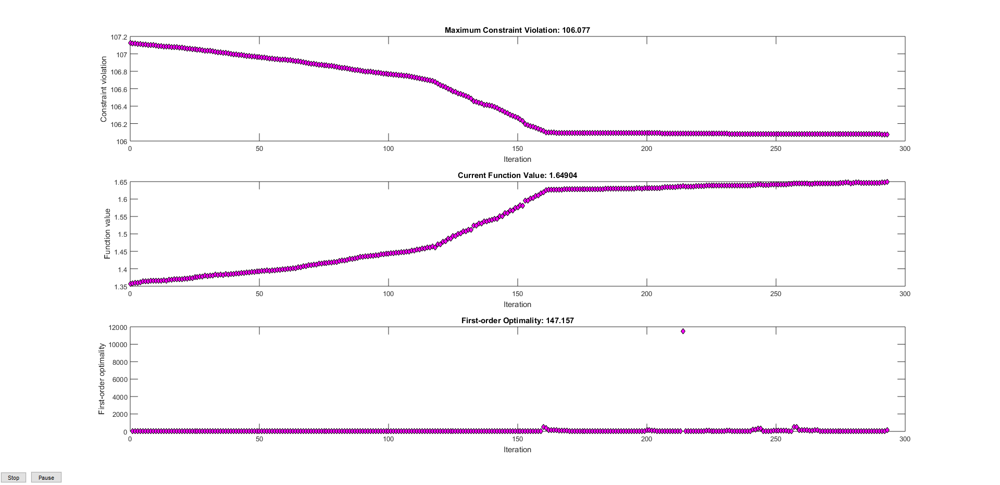
get results
cnt = 1;
I_b = x(cnt:cnt+T-1);
cnt = cnt + T;
I_sk_out = x(cnt:cnt + K*T-1);
cnt = cnt + K*T;
I_sk_in = x(cnt:cnt + K*T-1);
cnt = cnt + K*T;
V_sk = x(cnt:cnt + K*T-1);
cnt = cnt + K*T;
L_k = x(cnt:cnt + K*T-1);
I_sk = I_sk_out - I_sk_in;
I_sk = reshape(I_sk,[T,K]);
I_sk_out = reshape(I_sk_out,[T,K]);
I_sk_in = reshape(I_sk_in,[T,K]);
V_sk = reshape(V_sk,[T,K]);
L_k = reshape(L_k,[T,K]);
t = 1:T;
plot results
figure();
subplot(3,1,1);
plot(t, I_b);
ylabel('I_b')
legend('I_b')
subplot(3,1,2);
l = {};
for k=1:K
plot(t, I_sk_in(:,k), '-');
l{k} = ['I_{s', num2str(k), '}'];
hold on;
end
ylabel('I_{s}')
legend(l)
subplot(3,1,3);
l = {};
for k=1:K
plot(t, V_sk(:,k));
l{k} = ['V_{s', num2str(k), '}'];
hold on;
end
ylabel('V_{s}')
legend(l)
xlabel('t')
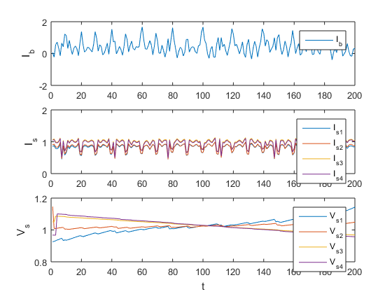
test constrains as given in equations
vals_c1 = I_b + sum(I_sk_out - I_sk_in, 2) - sum(I_Mn, 2);
figure()
plot(vals_c1)
title('I_b + sum(I_{sk}^{out} - I_{sk}^{in}) - sum(I_{M_n}) | should all be zero')
vals_c2 = zeros(T,1);
for k=1:K
sumval = Delta/C_k(k) * I_sk(:,k) + R_sk_max(k) * abs(I_sk(:,k));
vals_c2 = vals_c2 + V_sk(:,k);
vals_c2 = vals_c2 - cumsum(sumval);
end
figure()
plot(vals_c1)
title('second sconstraint | should all be zero')
disp(['should be zero:', num2str(V_sk(1) - V_sk(end))])
vals_c31 = (I_sk_out-I_sk_in)-L_k;
figure()
for k=1:K
plot(vals_c31(:,k))
hold on
end
plot(vals_c1 .* 0, 'k')
title('( I_{sk}_{out}-I_{sk}^{in} )+L_k | should all be higher than zero')
vals_c32 = L_k -(I_sk_out-I_sk_in);
figure()
for k=1:K
plot(vals_c32(:,k))
hold on
end
plot(vals_c1 .* 0, 'k')
title('L_k -( I_{sk}^{ou} - I_{sk}^{in} ) | should all be higher than zero')
should be zero:-0.03254
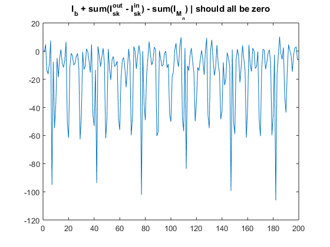 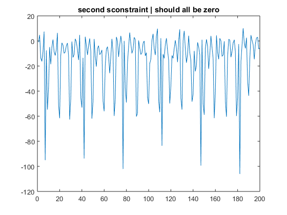 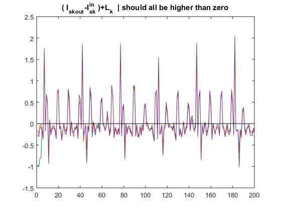 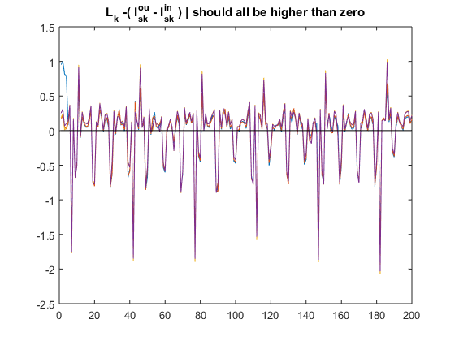
test constraints as implemented in matrix form
figure()
v = Aeq * x - beq;
plot(v < 0)
title('Aeq * x - beq <= 0 | should all be true')
figure()
v = A * x - b;
plot(abs(v) < options.TolCon );
title('A * x - b = 0 | should all be true')
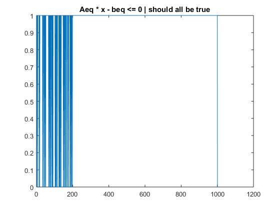 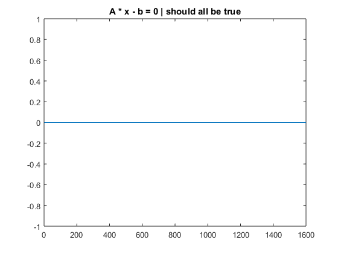
test boundaries as implemented in matrix form
figure()
plot(x >= lb)
title('x >= lb | should all be true')
figure()
plot(x <= ub)
title('x <= ub | should all be true')
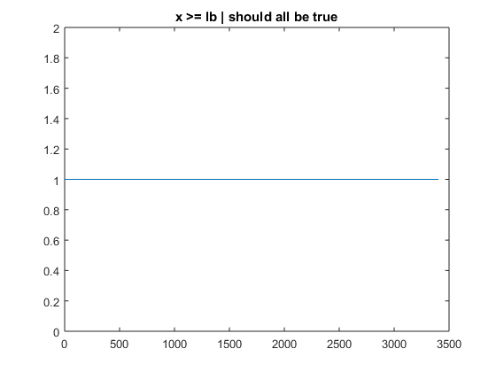 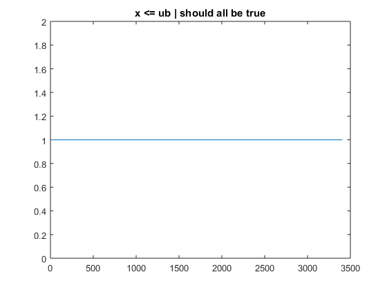